House 02 · Guest placement and foreground masks
Room artwork review and door placement. Accepted positions can still be adjusted here for a subsequent revision.
Choose Place doors on a room, select a destination, then click the floor at the door's threshold or drag its marker.
Green means placed; amber means an old placeholder. Position each marker where the player's feet should trigger the transition.
The original coordinates do not constrain your placement. Hidden passage panels can be positioned too.
Your changes save in this browser, separately for each exact image revision. When finished, download the positions and provide that JSON for integration.
This editor does not change the playable map or approve other artwork.
Guest placement: choose Char or Chris, posture and facing, then Add guest slot.
Click or drag its anchor: feet for standing, seat for seated. Slots are generic placements; the preview character does not lock the case cast.
Seated contacts are provisional estimates. Draw foreground mask polygons around the furniture parts that should cover a guest, then Finish mask.
Each new mask defaults to its own bottom edge for depth. Guests whose anchor (feet when standing, seat when seated) is behind that depth are covered; guests in front remain visible.
Use mask bottom edge repairs a selected mask's depth; a custom furniture front depth can also be applied.
View scene hides editing outlines. Source artwork is unchanged; masks redraw selected background pixels above the guest.
Character scale uses the shared 80-unit standing reference. Chair-back separation and exact furniture fit need visual review.
Guest placements save automatically in this browser.
Library
Removed the isolated bottom row of stools; paired two chairs with the reading table; kept a separate armchair and sofa.
Connections: Living-Room (west), Hall 2 (south), Hidden passage panel
library-v1.png · approved visual
Earlier furniture proposal — provisional geometry
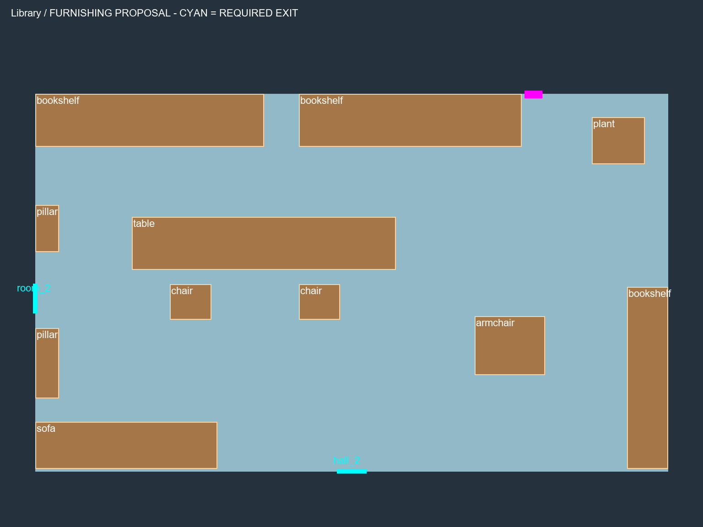
Study
Grouped desk and chair; replaced thin disconnected lower shelves with one cabinet; paired reading chair with side table.
Connections: Master-Bedroom (north), Hall 2 (east)
study-v2.png · approved visual
Earlier furniture proposal — provisional geometry
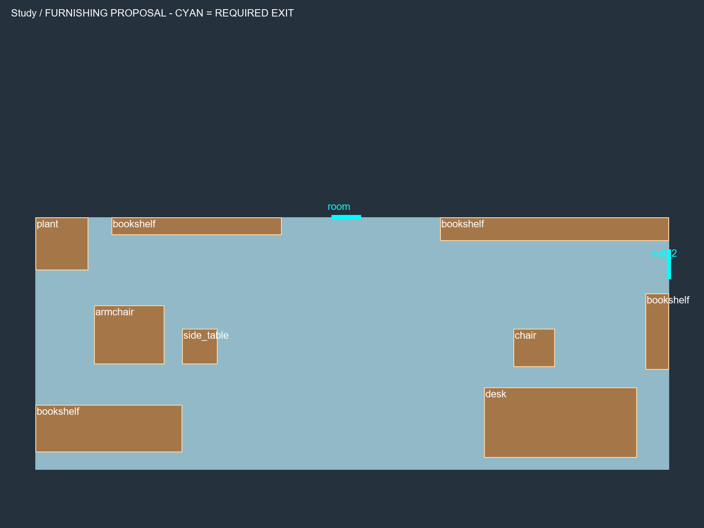
Master-Bedroom
Enlarged bed to a usable footprint and added matching nightstands. Windows are wall decoration, not floor blockers.
Connections: Study (south), Hall 2 (east)
master-bedroom-v1.png · approved visual
Earlier furniture proposal — provisional geometry
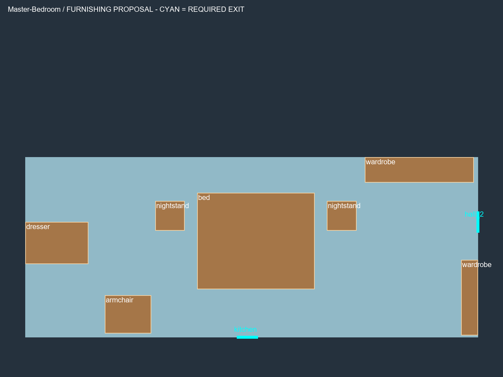
Living-Room
Rebuilt the right wall as one continuous plane with two ordinary flush wooden doors; preserved the conversation group.
Connections: Library (east), Hall 2 (east)
living-room-v2.png · approved visual
Earlier furniture proposal — provisional geometry
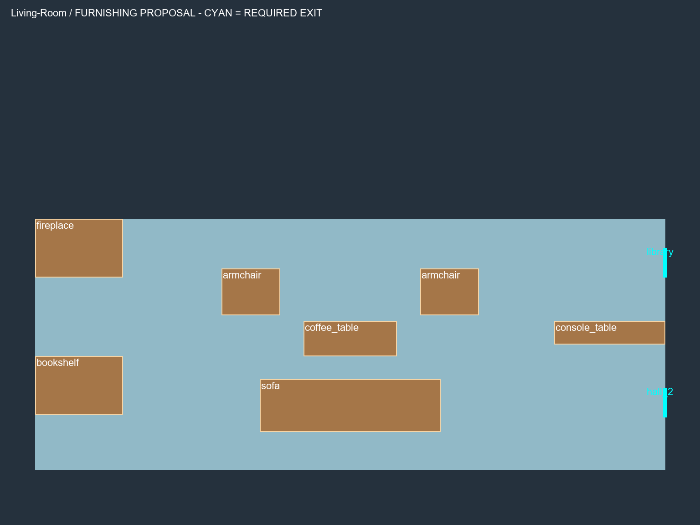
Guest Bedroom
Enlarged bed, added bedside table and paired desk with chair; preserved basement and hall access.
Connections: Hall 2 (west), Basement (north)
guest-bedroom-v1.png · approved visual
Earlier furniture proposal — provisional geometry
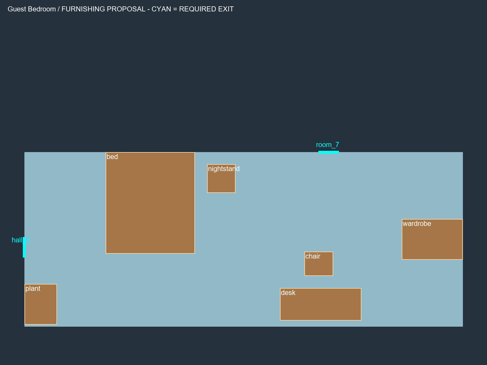
Kitchen
Added a range and two stools tucked along the island; south exit kept clear.
Connections: Dining Room (south), Hall 2 (west)
kitchen-v1.png · approved visual
Earlier furniture proposal — provisional geometry
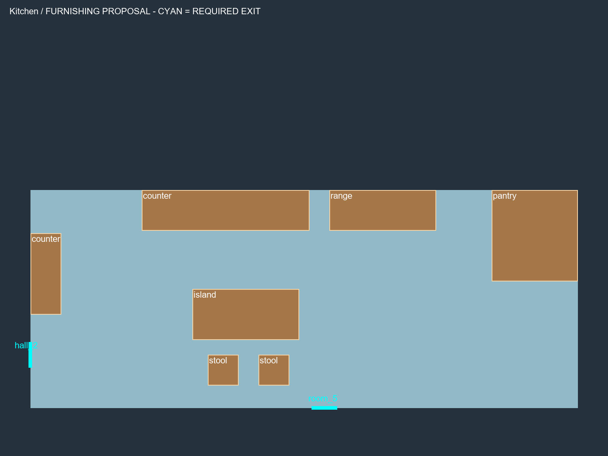
Dining Room
Added six chairs grouped around dining table, leaving circulation around both ends.
Connections: Kitchen (north), Hall 2 (west)
dining-room-v1.png · approved visual
Earlier furniture proposal — provisional geometry
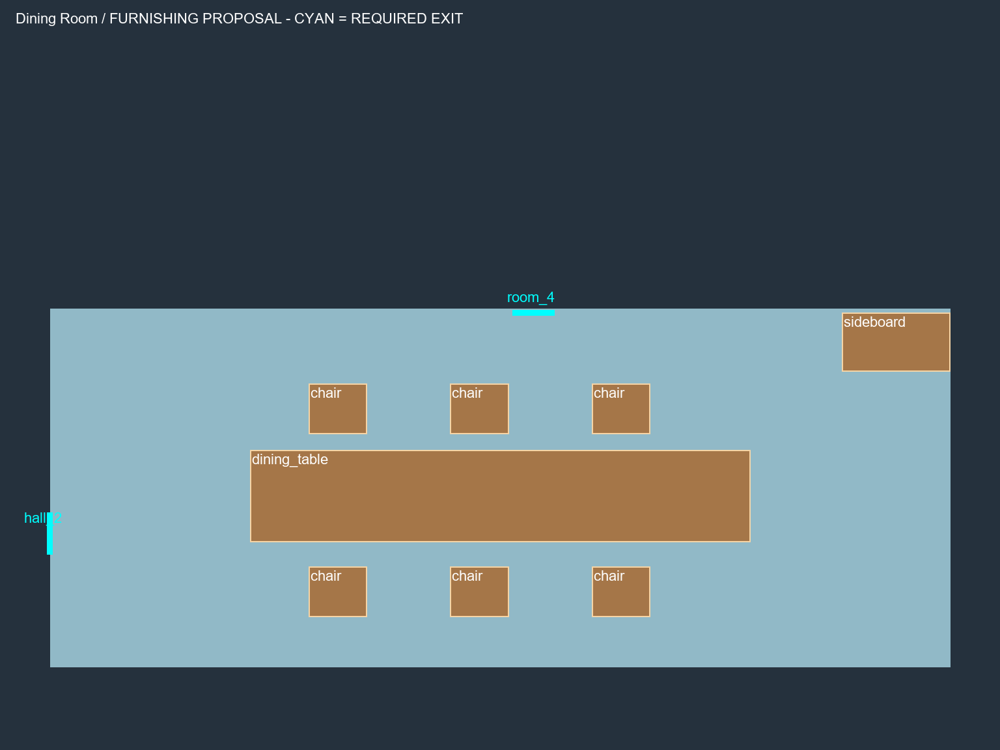
Front Entry
Replaced erroneous stairs with localized pillar and statue bases. No north windows; northern opening leads inside.
Connections: Hall 2 (north)
../drafts/front-entry-pillars-v2.png · approved visual
Earlier furniture proposal — provisional geometry
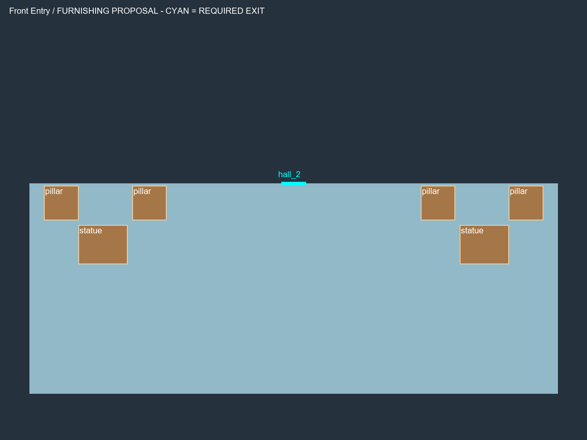
Secret passage
Removed rubble from the exit and tucked crates against corridor edges.
Connections: Library panel, Study panel
secret-passage-v1.png · approved visual
Earlier furniture proposal — provisional geometry
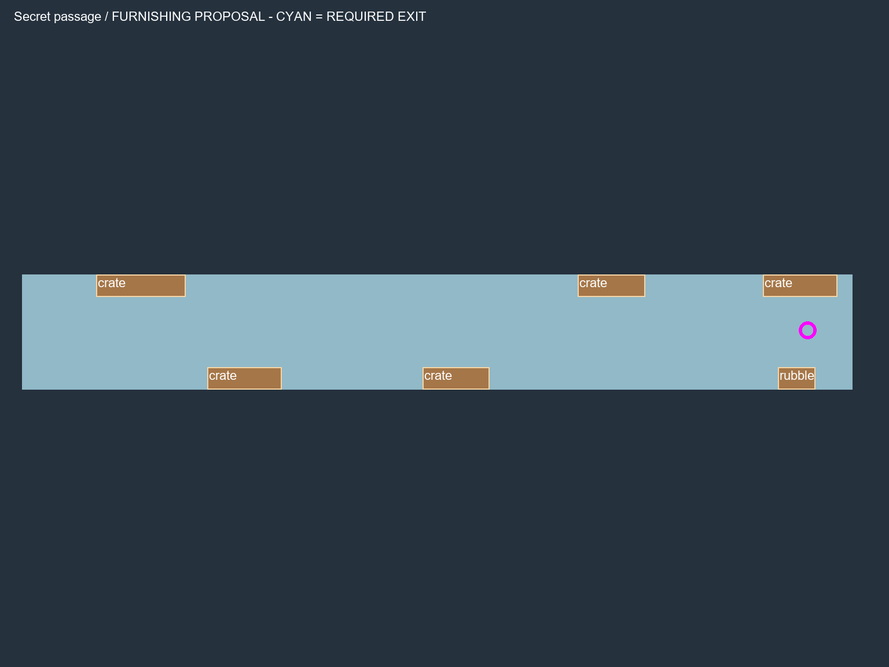
Hall 2
Nearest doors made taller to match adjacent door proportions; bottom rug ends adjusted along their thresholds. Foreground paintings remain removed.
Connections: Guest Bedroom (east), Library (north), Living-Room (west), Master-Bedroom (west), Study (west), Front Entry (south), Kitchen (east), Dining Room (east)
hall-v9.png · approved visual
Earlier furniture proposal — provisional geometry
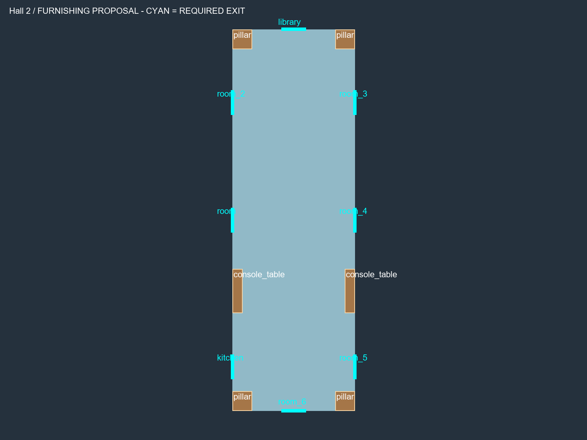
Basement
Grouped storage against walls; left the southern doorway clear.
Connections: Guest Bedroom (south)
basement-v1.png · approved visual
Earlier furniture proposal — provisional geometry
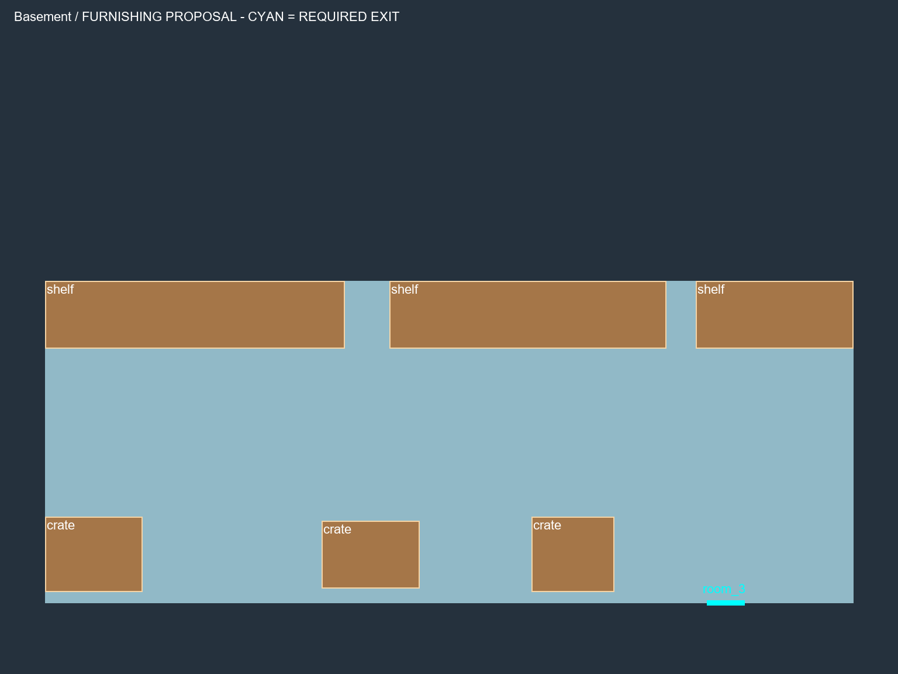